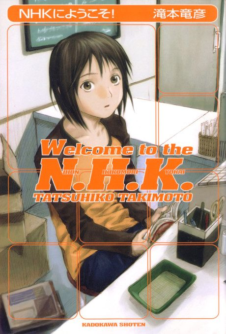

Anime
Anime
Light novel2006 · Comedy, Drama, Psychological
Welcome to the N-H-K
N・H・Kにようこそ！
AniList8.2
Animeter—
Episodes24 ep
SourceDone
Is it worth pushing through?
Built from what visitors report across all 24 episodes.
Loading reports…Checking what other people said about this one.
Sign in with your email at the top of the page to add your report.